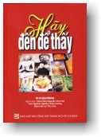

|
BuddhaSasana Home Page |
Vietnamese, with Unicode Times font |
|  |
Hãy
Đến Để Thấy Ni Sư Ayya Khema Come And See For Yourself: |
-ooOoo- Tác Giả AYYA KHEMA sinh năm 1923 trong một gia đình người Do Thái tại Bá Linh. Bà trốn khỏi Đức sang Tô Cách Lan (Scotland) năm 1938, cùng với 200 trẻ em khác. Sau đó được đoàn tụ với cha mẹ bà tại Trung Hoa. Khi chiến tranh thứ hai bùng nổ, bà và gia đình bị đưa vào các trại giam tù binh của Nhật. Sau chiến tranh, bà di cư sang Mỹ và lập gia đình tại đó. Vào khoảng đầu những năm 1960, bà chu du nhiều nơi khắp châu Á, và sau 10 năm hành thiền, bà bắt đầu dạy thiền và thuyết giảng về Phật giáo ở châu Âu, Bắc Mỹ và Úc. Ni Sư Ayya Khema đã góp công lớn vào việc gầy dựng lại ni đoàn Phật giáo. Ni Sư thọ giới vào năm 1979, theo truyền thống Nguyên thủy tại Sri Lanka. Tại đó Ni Sư đã thiết lập Trung Tâm Nữ Phật tử Quốc tế và Đảo Parappuduwa dành cho Ni chúng và nữ cư sĩ. Vào năm 1987 Ni Sư phối hợp tổ chức một hội thảo về Ni đoàn Phật giáo Quốc tế lần đầu tiên, mà kết quả là ni đoàn Sakyadhita, một tổ chức nữ Phật giáo quốc tế được thành hình. Ni Sư đã viết hơn 20 đầu sách về thiền và Phật giáo bằng tiếng Anh và Đức, tác phẩm nổi tiếng nhất của Ni Sư là Being Nobody, Going Nowhere (Việt dịch: Vô Ngã Vô Ưu, Diệu Liên Lý Thu Linh), đã được giải thưởng Christmas Humphreys (Christmas Humphreys Memorial Award). Các tác phẩm của Ni Sư đều thể hiện được sự nhận thức sâu xa trong thực hành, sự lợi ích của thiền tập, và lời kêu gọi đơn giản hóa cuộc sống hàng ngày của chúng ta, cũng như thanh tịnh hóa thân tâm bằng cách ứng dụng những lời dạy của Đức Phật vào cuộc sống. Bên cạnh việc thành lập Wat Buddha Dhamma (Ngôi Nhà Phật Pháp) ở Úc, một lâm tự viện theo truyền thống Nguyên thủy, Ni Sư còn là Giám đốc đỡ đầu cho Buddha-Haus (Ngôi Nhà Phật) ở Đức, nơi Ni Sư viên tịch vào năm 1997. (ND: Bạn đọc có thể tìm hiểu thêm về cuộc đời của Ni Sư Ayya Khema qua bản dịch Quà Tặng Cuộc Đời (I Give You My Life). -ooOoo- Lời Nói ĐầuNi Sư Ayya Khema sinh ra là người theo Do Thái giáo nhưng lại là người Phật tử khi từ giã cõi đời. Gần cả cuộc đời bà du hành khắp nơi trên thế giới cùng với gia đình, và chỉ trở về Đức vào những năm cuối đời. Một số chuyến phiêu lưu của bà được kể lại trong quyển hồi ký thú vị, I Give You My Life (Quà Tặng Cuộc Đời). Lần đầu tiên tôi nhìn thấy Ni Sư là trên một phóng sự của đài truyền hình về một cộng đồng Phật giáo ở Uttenbuehl, dưới chân của rặng núi Alps ở phía nam nước Đức. Phóng sự đó gây nhiều xúc động cho tôi và vài năm sau đó tôi rất vui mừng được có thể giúp dịch một trong những số sách của Bà. Khoảng thời gian đó tôi đã chuyển qua Anh quốc, và đang ở một giai đoạn trong cuộc đời khi tôi cảm thấy rất khó khăn để hành thiền. Đối với tôi, quyển sách này giống như một khóa Phật học cơ bản, dựa trên những bài giảng của Ni Sư Ayya Khema trong những buổi thuyết pháp vào ngày thứ Tư hằng tuần tại Ngôi Nhà Phật (Buddha-Haus) ở Uttenbuehl, và đã xuất bản lần đầu tiên năm 1994. Tôi rất thích các bài giảng này vì chúng được dựa trên các kinh điển truyền thống của Đức Phật. Ni Sư Ayya Khema đọc vài kệ từ trong kinh Pháp Cú hay một số kinh, luận ngắn khác, rồi giải thích, giảng rộng ra thêm. Ni Sư rất hoan hỷ giảng giải kinh cho bất cứ ai thích tu thiền và tìm hiểu về Phật giáo. Với sự hiểu biết, và kinh nghiệm trong việc chuyên tu thiền định của bản thân, Ni Sư Ayya Khema thường giảng về thiền một cách đầy nhiệt tình. Thật vậy, Ni Sư luôn nhấn mạnh đến việc làm thế nào để áp dụng việc hành thiền trong đời sống hằng ngày. Ni Sư Ayya Khema không hề e dè khi trao đổi với các 'đồng nghiệp' Thiên Chúa giáo của mình, so sánh các kinh nghiệm thiền định của Ni Sư với unio mystica (tạm dịch, một huyền bí) của những người như Eckhart (Meister Eckhart), và Ni Sư cũng hướng dẫn các khóa tu thiền trong các tu viện Thiên Chúa giáo. Chính Dhammaloka, là người đầu tiên đề nghị với nhà xuất bản Windhorse dịch quyển Komm Und Sieh Slebst (Come And See For Yourself), xuất bản lần đầu năm 1994, sang tiếng Anh. Jayachitta bắt đầu công việc dịch thuật, và tôi tiếp tục sau đó. Jinananda sau đó biên tập lại bản dịch và Punyamati tỉ mỉ xem lại bản thảo lần cuối. Xin chân thành cảm ơn mọi sự đóng góp của họ. Portia Howe và những người còn lại trong nhóm ở nhà xuất bản Windhorse Publications, cũng đóng góp nhiều công sức. Nhiều người khác cũng đã góp tay bằng nhiều cách khác nhau, nhất là tăng đoàn (Sanghamitta) ở Ngôi Nhà Phật (Buddha-Haus), Ulrike Harris, Asanga, Vassika, Ratnaprabha, Shantiprabha, và người cộng sự của tôi, Martina. Tôi xin hồi hướng công sức dịch quyển sách này đến tất cả Phật tử ở Tây phương, và mong rằng tất cả mọi độc giả đều đón nhận được một thoáng hào quang ấm áp chiếu soi từ Đức Phật. Michael Etzold -ooOoo- Lời Người Dịch Dầu tâm nguyện được có duyên lành để dịch tất cả các sách tiếng Anh của Ni Sư Ayya Khema, nhưng để đạt được tâm nguyện đó là bao thử thách đối với tôi. Trước hết là quỹ thời gian của tôi ngày càng cạn kiệt, nhưng khó khăn nhất vẫn là sự hiểu biết rất giới hạn về Phật pháp nói chung, và các kinh nghiệm thiền định nói riêng. Nhưng tôi cố gắng không bỏ cuộc và tôi đã cầu nguyện đến sự gia hộ của chư Phật, của Ni Sư Ayya Khema, cũng như sự rộng lượng của quý độc giả. Suy cho cùng, tôi là người được nhiều nhất trong việc làm này: được thấm nhuần thêm những giáo lý cao siêu mà gần gũi biết bao của Đức Phật. Chỉ mong mọi người tha thứ cho sự mạo muội này. Lần nầy khi quyết định chuyển ngữ quyển Come and See for Yourself, từ bản tiếng Anh, tôi đã may mắn được hai đạo hữu Chơn Minh Nguyễn Văn Phú và Tịnh Nghiêm Nghiêm Xuân Cường, hoan hỷ giúp dịch từ chương 1 đến chương 5 của quyển sách, xem như đã giảm được nửa gánh nặng cho tôi. Nhờ thế quyển sách dịch Come and See for Yourself (Hãy Đến Để Thấy) đã sớm được hoàn thành để đến tay bạn đọc, những độc giả rất rộng lượng của chúng tôi, những người không kể đến các sơ sót của chúng tôi, luôn khuyến khích chúng tôi tiếp tục công việc dịch thuật, và cũng đầy lòng ngưỡng mộ đối với Ni Sư Ayya Khema như chính bản thân chúng tôi. Xin có đôi lời giới thiệu về hai đạo hữu đồng dịch giả: - Chơn Minh Nguyễn Văn Phú, sinh quán tại Nha Trang, Khánh Hòa, là cựu học sinh trường Võ Tánh, Nha Trang; cựu sinh viên Khóa 8, Cao Đẳng Thủy Lâm, Trung Tâm Quốc Gia Nông Nghiệp, Saigon; đã tốt nghiệp tại Duke University, North Carolina, Hoa Kỳ. Hiện đang làm việc với Michigan State University, ngành Thủy Lâm. - Tịnh Nghiêm Nghiêm Xuân Cường, nguyên quán tại Tây Mỗ, Hà Đông, hiện sinh sống và hành nghề Dược tại tiểu bang Michigan, Hoa Kỳ với gia đình. Ông cũng là tác giả của một tập thơ đạo và thiền với tựa đề Trở Về và một tuyển tập nhạc thiền Như Mây Trôi Đi. Quyển Hãy Đến Để Thấy (Come and See for Yourself), gồm có 12 chương. Mỗi chương dựa trên một hay nhiều bản kinh về nhiều đề tài khác nhau. Có những đề tài quen thuộc, dễ hiểu, nhưng cũng có những đề tài gây cho chúng tôi nhiều bối rối. Thí dụ chương 11 nói về các tầng thiền định, thiền tuệ, và chương 12 bàn về tính Không trong Kinh Bát Nhã. Chúng tôi đã hết sức cố gắng trong khả năng giới hạn của mình để phần nào chuyển tải những lời giáo huấn của Ni Sư Ayya Khema dựa trên Kinh điển của Đức Phật. Tuy nhiên như chính Ni Sư đã nói, trong chương 11: '... Thật rất khó giải thích. Chỉ có người chứng nghiệm mới thật sự hiểu được." Thật vậy, với những điều được nói đến trong các chương này, chúng tôi, nếu có thể, cũng chỉ dịch được lời chứ không được ý, hiểu được từ chứ không chuyển được nghĩa câu. Ngoài ra, cũng xin lưu ý độc giả rằng, vì Ni Sư Ayya Khema tu theo Nguyên Thủy, nên Ni Sư có cái nhìn riêng đối với một số kinh điển Đại thừa, thí dụ như Bát Nhã Tâm Kinh. Chắc chắn là quyển sách dịch này không thể tránh được nhiều sai sót, mong quý tôn sư, các bậc uyên thâm, thiện trí thức, chỉ dẫn cho, để lần tái bản sau được hoàn thiện hơn (xin liên lạc về ltl3107@yahoo.com ). Lần nữa xin chân thành cảm niệm công đức của Ni Sư Ayya Khema đã để lại cho đời những bài thuyết pháp xúc tích về giáo lý của Đức Phật mà đối với chúng tôi là những bài Phật học hữu ích. Với sự đồng ý của hai đạo hữu đồng dịch giả, tôi xin được hồi hướng công đức dịch thuật này đến hương linh của Mẹ tôi là cụ bà Lý Thị Lăng, Pháp danh Diệu Thọ, tạ thế ngày 27 tháng 3, năm 2006. Xin chân thành cảm ơn tất cả bạn bè, thân quyến đã đóng góp để ấn tống quyển sách dịch này. Ngưỡng cầu Hồng ÂnTam Bảo hỗ trợ cho chúng con luôn được gặp Phật pháp trong nhiều đời, nhiều kiếp về sau. Diệu Liên Lý Thu Linh -ooOoo- |
Chân thành cám ơn chị Diệu Liên đã gửi tặng bản vi tính (B. Anson, 08-2006).
[Trở
về trang Thư Mục]
last updated:
28-08-2006